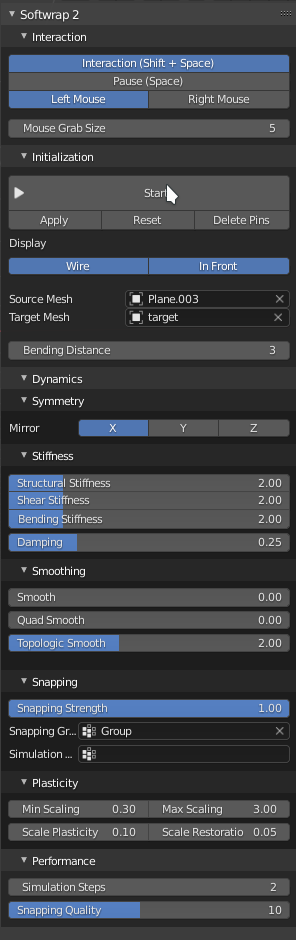
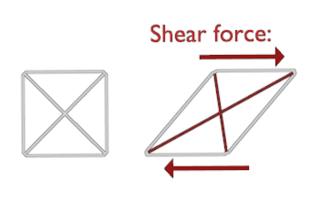

Interface
Here you find a description of each option in the addon. Usually you need to tweak them for best results when wrapping complex models.
Or maybe you want a simple quickstart.

Interaction panel
- Interaction enables the mouse interaction with the simulation, when disabled, you cant grab the mesh or create pins.
- Pause Halts the simulation temporarily.
- Left Mouse / Right Mouse which mouse button to use for grabbing the mesh and creating pins
- Mouse Grab size The area of influence when you grab the mesh using the mouse
Initialization panel
-
Start Starts the simulation as a modal operator, while the simulation is running this button changes to "Stop" you can also stop the simulation by pressing ESC
-
Apply removes the shapekey created by softwrap and applies its shape as default.
- Reset removes the shapekey but dont apply the shape, essentially reverting the original shapekey
- Delete Pins removes all pins used by the selected source mesh
- Bending Distance the distance in edges for bending springs to be created, the higher this value the less flexible the simulation gets.
Symmetry panel
- Mirror which axis to mirror the source mesh, the object origin is used as mirror center
Stiffness panel
-
Structural Stiffness the Stiffness of the direct links between vertices, the higher the value, the less stretchy the simulation is.
-
Shear Stiffness
Resistance to a kind of force that distorts polygons known as Shear.  -
Bending Stiffness
Resistance to foces that bend the mesh. -
Damping
Dampen the simulation to prevent stability issues, higher values makes the mesh move slower.
Smoothing panel
- Smoothing Plain smoothing applied the mesh each frame, similar to blender's smooth modifier but dynamic.
- Quad Smooth A special kind of smoothing that applies forces to restore the original shape of the quads.
- Topologic Smoothing
A smoothing mode that is less aggressive and doesn't shrink the mesh, it uses the edge flow as guidance for its smoothing and applies forces to restore the volume.
Snapping panel
- Snapping Force Applies a force to attract the source mesh to the target mesh.
- Snapping group Vertex group to mask which vertices should be affected by snapping force.
- Simulation group Vertex group to freezes the vertices.
Plasticity panel.
- Max Scaling maximum allowed plastic deformation scaling for edges.
- Min Scaling minimum allowed plastic deformation scaling for edges.
- Scale Plasticity how much to permanently deform the mesh after its stretched or compressed
- Scale Restoration How much to restore the original length of the edges when its not under stress
Performance panel
- Simulation steps How many steps to run on each frame, this doesn't affect the movement speed but affects performance and Stiffness.
- Snapping Quality The Quality of the snapping force.